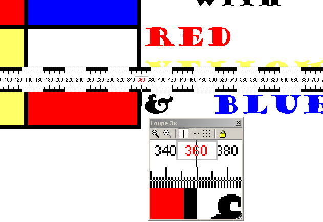
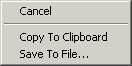

Last modified: Oct 26, 2007
TopTools v3.0

Description
TopTools is a set of utilities for web-designers and GUI-developers.
It features
a screen-loupe and a screen-ruler seamlessly working together, additional are a
base-converter, a color-picker and a screen-grabber.
The main window has a small
footprint and minimizes to the system-tray.
Introduction
I developed TopTools through the years as I was confronted with questions like:
- How can I get a closer look at this icon?
- How many pixels should I move this image to align with the rest?
- What is the height of this image?
- What is the RGB value of this pixel?
- How can I get this part of the screen on the clipboard?
- What was the ASCII value of this character again?
- What is 10110110 in hexadecimal?
- How can I quickly resize this window to 640x480
Features
General
All tool windows have a right-click popup menu, most of them are self-explanatory.
Ruler
The ruler measures screen objects in pixel units. It has a floating position
indicator that follows the mouse pointer. The mouse pointer has a line shape
that flips when moved across the center of the ruler, in this way both sides of
the ruler can be used. The ruler orientation can be toggled through the popup
menu or by pressing the numeric '/' key. It can be moved with the arrow keys or
by dragging it with the mouse.

Loupe
The loupe displays an enlarged view of the area around the mouse pointer,
optionally a crosshair can be shown to indicate the exact hotspot location. The
zoom factor can be adjusted between 1 and 20 times either through the popup menu
or by pressing the numeric '+' and '-' keys. The loupeview can be frozen by
hitting the spacebar.
 Info
Info
The info window displays the color of the pixel under the mouse hotspot in both
RGB and #webcolor notation. Besides it shows the current mouseposition in screen
coordinates.
By pressing 'Ctrl-C' or a user definable hotkey, the current color is copied to
the clipboard in RRGGBB format.
 Base Converter
Base Converter
The base converter is a tiny calculator that converts between hexadecimal,
decimal and binary. It can also be used to find the ASCII value of printable
characters.
Screen grabber
The screen grabber captures a portion of the screen. This snapshot can be copied
to the clipboard or it can be saved to file in .bmp .gif .png or .jpg format.
Vista
I didn't test the program on Vista yet, but I know the screen grabber is broken.
It uses Win32 features that are blocked by Vista's new
security model (it uses a 'journaling hook' to capture global mouse events).
The rest of the program should be working fine, but feedback is welcome.
History
TopTools was born when I was using a screen-magnifier and a screen-ruler at the
same time and was annoyed by the fact that the two didn't cooperate:
The magnifier showed the portion of the screen that is left of and above the
hotspot of the mouse pointer instead of a portion around the hotspot.
So when the magnifier was used together with the ruler, one would see either a
close-up of the ruler, or a close-up of what was really to be measured, but with
the ruler out of sight. The ruler was actually quite good, but it came up with
annoying shareware nag-boxes and I thought the price was a bit high for such a
simple utility, so I decided to create my own.
Later I added some other little utilities, like the base-converter and the color-picker.
Screen capture was the latest addition to the tools.
The initial version was developed using Borland C++ 5.0 and the Object Windows
Library. Later versions were adapted to and maintained with Borland C++Builder 3,
4 and 5.
Version history
version 3.0:
-
Loupe
I rewrote the loupe from scratch, attempts to make it sizable made clear this was the only sane option.
It is sizable now and I added a tool bar.
On machines running Windows 2000 or Windows XP, the loupe window sits on it's own layer, so it doesn't show up in it's own view, it is fully transparent to itself ;).
Magnification can now be any discrete value between 1 and 20.
The view can be frozen (detached from mouse movement) so it is possible to keep the magnified view of a screen part in focus. The focus point of the view can be moved by dragging it with the mouse.
-
Screen capture
The screen grabber no longer freezes the screen during a capture session.
It now supports PNG format in saving snapshots.
-
Global hotkey
Version 2.41 added functionality to the info window so that pressing Ctrl-C would copy the current color in #ABCDEF webcolor format to the clipboard, but this only works when one of the TopTools windows has the keyboard focus.
The global hotkey works regardless of which window (or even what desktop) is active, it acts global for the entire machine.
-
Options dialog
The hotkey needed a way to be configured, so I added this dialog.
The way a color is copied to the clipboard can also be configured, a leading '#' is annoying in Photoshop, it prefers ABCDEF (or it gives you #ABCDE), but when editing HTML it is more convenient to have a '#' prefix and have surrounding quotes ("#ABCDEF"). These format settings apply to both the hotkey action and the classic Ctrl-C action (which still works).
Finally I added an option to start with Windows and a way to adjust the length of the ruler.
-
General
I spent a lot of time playing with the appearance of the tools.
All tool windows now have a "snap to screen border" feature. You can override this behavior by holding down the Ctrl key while moving the window.
version 2.43:
-
Fixed two bugs in the Screen-grabber:
The snapshot was only saved when the selection was made from top-left to bottom-right, classic example of sloppy programming...
Selecting Cancel in the "Save to File" dialog now cancels the entire capture operation. - The ruler orientation can now be toggled with the middle mouse button (provided this event is mapped to 'middle button' in the Mouse settings of the Control Panel).
version 2.42:
- Tray icon now gets restored after a restart of Windows Explorer.
version 2.41:
- When using the color-picker, pressing Ctrl-C now copies the current pixel color to the Windows clipboard in #RRGGBB webcolor format.
- It looks like I finally managed to get the stay-on-top feature stable...
- Need to rethink the trayicon double-click and minimize logic, suggestions are welcome!
version 2.40:
- Doubleclicking the tray-icon now restores the main-window.
- Loupe can now be zoomed in and out with the '+' and '-' keys on the numeric keypad.
- Removed the doubleclick action (toggle orientation) from the ruler, it interfered with the singleclick action (start a drag operation). Orientation can now be toggled with the '/' key on the numeric keypad.
- Fixed a bug in the loupe-magnification (this one was introduced with version 2.3).
- Removed the grid option from the loupe, it served no practical purpose.
- Fixed a bug in the binary field of the baseconverter that made the caret jump to the left with every digit entered.
- Revamped the "About..." dialog box, it now shows the actual build number and date. Also added a hyperlink to the TopTools homepage and changed the logo.
Todo:
- Write a little help file.
Known bugs:
-
I didn't test the program on Vista yet.
The screen grabber uses some Win32 features that are blocked by Vista's new security model (it uses a 'global journaling hook' to capture the mouse).
I don't see a simple solution, as it looks now it requires a complete rewrite of the grabber interface to get it working under Vista.
Comments, requests and bug reports: